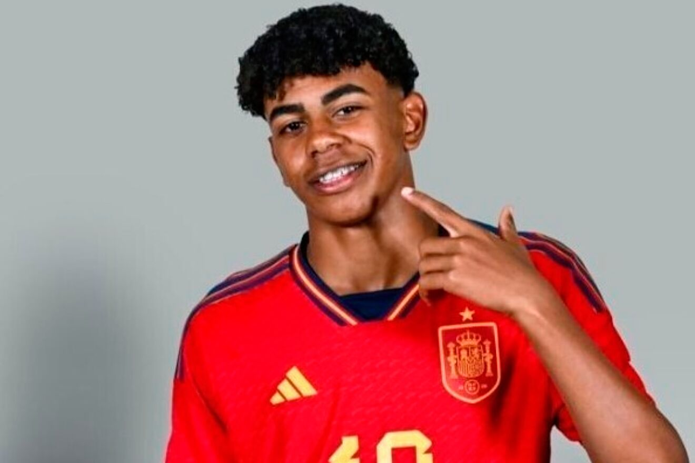

Recorrido en la Selección

Primeros pasos en categorías inferiores
Antes de llegar a la élite, Lamine Yamal fue convocado por las categorías juveniles de España, donde rápidamente destacó por encima de sus compañeros. Su talento natural lo convirtió en una de las piezas más desequilibrantes en torneos sub-15 y sub-17.
- Capacidad para jugar sin miedo pese a la presión.
- Facilidad para romper defensas en el uno contra uno.
- Inteligencia para adaptarse a distintos esquemas de juego.
Su rendimiento reforzó la idea de que era un jugador con proyección mundial, capaz de competir contra futbolistas más experimentados aun siendo muy joven.
Convocatoria con la Absoluta
En agosto de 2023, con solo 16 años, fue convocado por primera vez a la Selección Española absoluta por Luis de la Fuente. La noticia generó gran impacto por ser uno de los debuts más tempranos en la historia de España.
Debut Histórico
El 8 de septiembre de 2023 debutó con España en la clasificación para la Eurocopa 2024 frente a Georgia, con 16 años y 57 días.
- Jugador más joven en debutar con la Selección Española absoluta.
- Goleador más joven en la historia de la selección.
Consolidación en el Equipo Nacional
Tras su debut, continuó siendo parte de las convocatorias y participó en partidos clave de clasificación, convirtiéndose en una pieza importante en la renovación de la selección.
Eurocopa 2024
En el verano de 2024 formó parte de la plantilla española en la Eurocopa en Alemania, consolidándose como uno de los jugadores más destacados del torneo.
Lista cronológica de hitos con España
- Categorías inferiores (Sub-15, Sub-17): Primeras convocatorias con España, destacando como figura juvenil.
- Agosto 2023: Primera convocatoria con la Selección absoluta a los 16 años.
- 8 de septiembre de 2023: Debut con la absoluta frente a Georgia.
- Récord: jugador más joven en debutar con España.
- Récord: goleador más joven en la historia de la selección.
- Finales de 2023: Participación continua en partidos de clasificación.
- Eurocopa 2024 (Alemania): Revelación del campeonato.
- 2025: Figura habitual en las convocatorias.